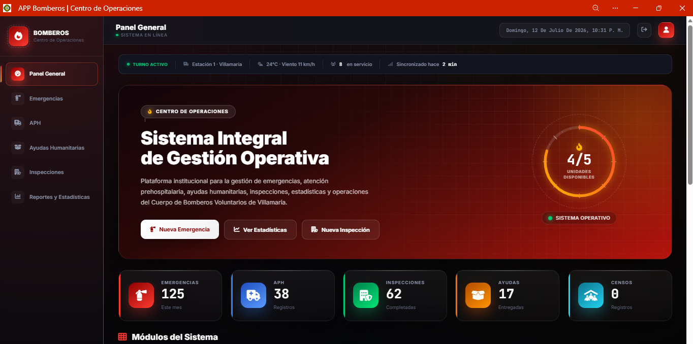
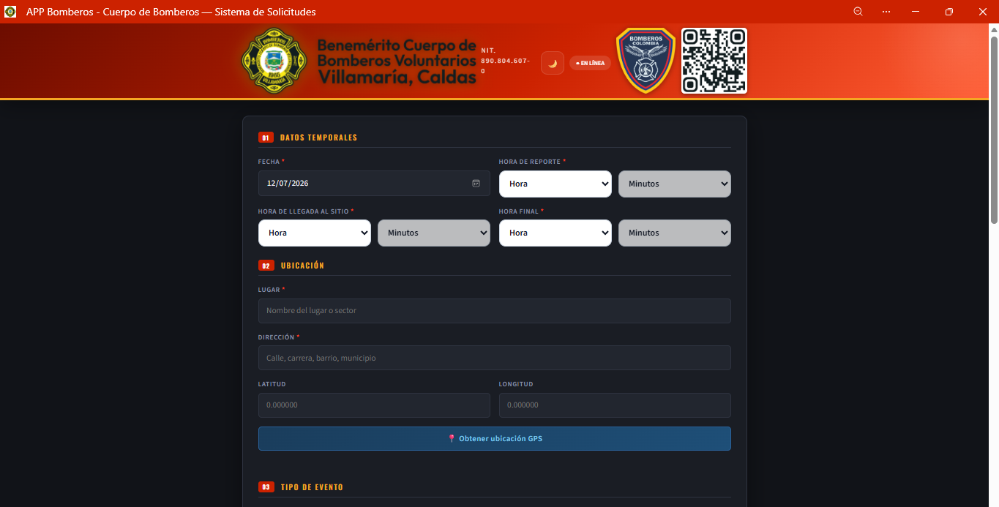
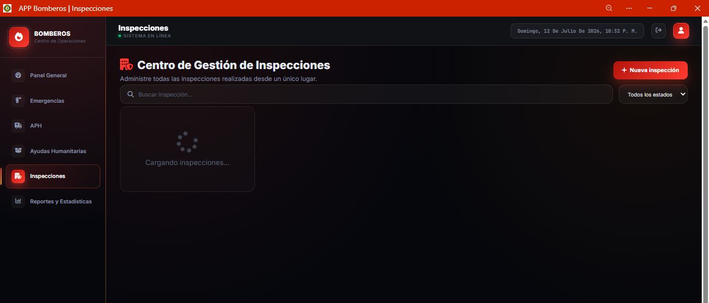
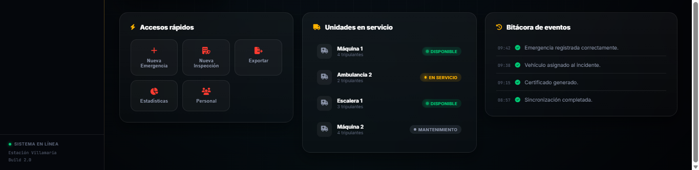

Emergencias
Registro del incidente desde el lugar de los hechos.
- Información general
- Recursos y vehículos
- Personal atendiente
- Fotografías y GPS
- Firma digital
- Certificado automático
Software para cuerpos de bomberos
CRONOM ONE reúne emergencias, atención prehospitalaria, inspecciones, censos y ayudas humanitarias en una sola plataforma. El personal captura GPS, fotos y firma desde el celular, y la administración consulta todo en un panel central.

Cada módulo captura la información en campo y la envía al Dashboard, donde queda organizada para consulta, seguimiento y estadísticas.
Registro del incidente desde el lugar de los hechos.
Atención prehospitalaria y seguimiento de pacientes.
Control de las ayudas entregadas a la comunidad.
Inspecciones técnicas y visitas de seguridad.
Registro y caracterización de comunidades.
Toda la información en un solo lugar.
Reducen errores de captura y mantienen la información disponible aunque no haya señal.
Coordenadas precisas del lugar del servicio.
Varias fotos desde cámara o galería.
Con mouse o pantalla táctil.
Documentos generados automáticamente.
La operación continúa sin internet.
Los registros pendientes se envían al volver la conexión.
Android, iOS y computadores, sin tiendas de aplicaciones.
Registros organizados y resguardados digitalmente.
Cada reporte sigue el mismo flujo digital, lo que deja trazabilidad de toda la operación.
El personal inicia un reporte desde cualquier dispositivo.
Se diligencia la información del servicio.
Las coordenadas se obtienen automáticamente.
Fotografías desde cámara o galería.
Validación táctil o con mouse.
Los pendientes se envían cuando hay conexión.
La información queda lista para consulta y análisis.
Capturas reales de las pantallas con las que trabajan el personal operativo y la administración.



CRONOM ONE es una aplicación web progresiva. Guarda los datos en el dispositivo y los sincroniza con la nube al recuperar la conexión, por eso no depende de la señal en el lugar del servicio.
La implementación toma unas ocho semanas: levantamiento, adaptación a sus formatos, capacitación y piloto con soporte cercano. La cotización depende del alcance.
Para validar el sistema con el personal antes de ampliarlo.
Para digitalizar toda la operación del cuerpo de bomberos.
Opcional, recomendado después de la puesta en marcha.
Soy Luis Alberto Benavides Tangarife, desarrollador independiente de software. Además de CRONOM ONE, diseño sistemas web a la medida, automatizaciones (RPA) y dashboards para organizaciones.